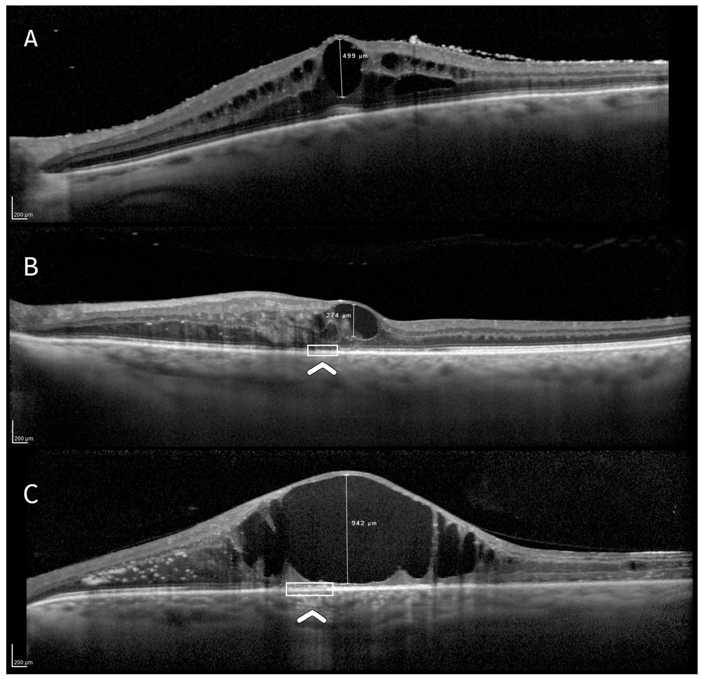
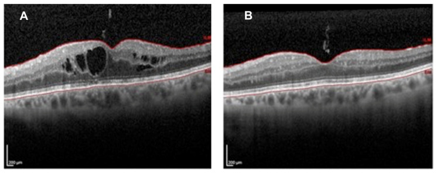
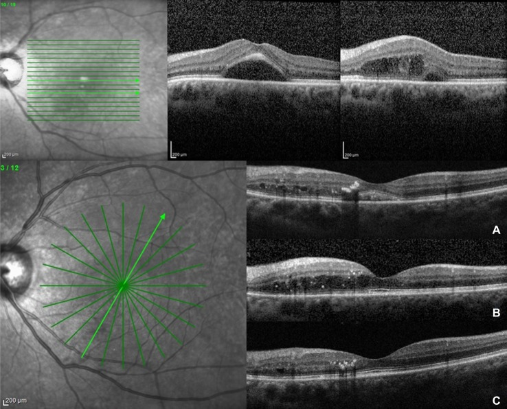
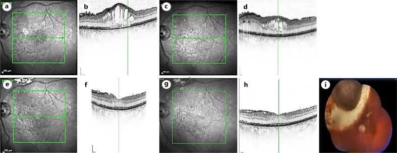

1418 — Phù hoàng điểm do xạ dai dẳng, kháng anti-VEGF: chọn implant dexamethasone 0,7 mg hay fluocinolone acetonide 0,19 mg / Recalcitrant radiation maculopathy: dexamethasone 0.7 mg versus fluocinolone acetonide 0.19 mg implant
Tags: pattern:phu-hoang-diem pattern:phu-hoang-diem-do-xa pattern:khang-anti-vegf pattern:thoat-dich vung:hoang-diem vung:vong-mac vung:mat protocol:OCT protocol:OCTA protocol:FA protocol:anti-VEGF protocol:implant-corticoid score:CEA
Mức chắc chắn (certainty): tổng hợp y văn (literature synthesis) — đọc toàn văn các loạt corticoid nội nhãn ở bệnh hoàng điểm do xạ, một nghiên cứu phân loại CEA 50 mắt, loạt fluocinolone 12 mắt và 8 mắt theo dõi 5 năm, cùng dữ liệu an toàn nhãn áp 171 mắt. Không có RCT so sánh trực tiếp dexamethasone với fluocinolone trong bệnh hoàng điểm do xạ; phần “chọn implant nào” là suy luận (inference) từ dược động học + ngưỡng nhãn áp + tiên lượng tế bào, đã ghi rõ tại chỗ.
Vì sao bài này quan trọng: bài 1409 đã chốt bệnh võng mạc do xạ (liều, thời gian ủ bệnh, phân biệt với tái phát u) và dừng ở câu “anti-VEGF là nền tảng, corticoid khi kháng trị”. Nhưng câu hỏi hằng ngày trong phòng khám là: sau 3–6 mũi anti-VEGF mà hoàng điểm vẫn phù, tiêm tiếp hay đổi sang implant corticoid; nếu đổi thì chọn loại tác dụng 4–6 tháng hay loại 36 tháng; và ai là người KHÔNG nên đặt implant vì đặt cũng không lấy lại được thị lực? Bài này trả lời ba câu đó bằng ngưỡng định lượng, không bằng cảm tính.
1. Tổng quan bệnh học – cơ chế hình ảnh – vì sao “kháng anti-VEGF” là chuyện sinh học, không phải chuyện liều
1.1. Chuỗi bệnh học: từ đứt DNA nội mô đến phù dai dẳng
- Khởi phát: tia ion hóa gây đứt sợi đôi DNA ở tế bào nội mô mao mạch và tế bào cận mao mạch (pericyte) — hai loại tế bào phân bào đủ nhanh để tích lũy tổn thương. Hệ quả là mất dần giường mao mạch, huyết khối vi mạch, thiếu máu võng mạc, tăng sinh VEGF, phá vỡ hàng rào máu–võng mạc (J Clin Med 2026, PMC13608844; Clin Ophthalmol 2021, PMC8436254).
- Vì sao phù xuất hiện muộn 12–18 tháng (khoảng 6 tháng–3 năm): mao mạch có dự trữ chức năng; chỉ khi số tế bào nội mô mất vượt ngưỡng mới lộ vùng không tưới máu và rò huyết tương. Đây là lý do bệnh sử xạ trị mới là chốt chẩn đoán, không phải hình thái phù.
- Vì sao phù kéo dài sau khi đã ức chế VEGF: ngoài VEGF, còn viêm thần kinh–võng mạc (neuroinflammation) do hoạt hóa microglia và loạn điều hòa cytokine; trên OCT, các điểm tăng phản xạ nội võng mạc (hyperreflective retinal foci, I-HRF) là dấu hiệu sớm của thành phần này (Cancers 2025, PMC12345670). Anti-VEGF không trúng đích viêm này → phù giảm một phần rồi tái phát dù tiêm đều.
- Vì sao corticoid trúng đích hơn ở giai đoạn này: glucocorticoid ức chế phiên mã VEGF, giảm IL-6/MCP-1, tăng biểu hiện occludin/claudin-5 ở tight junction và giảm bám dính–di chuyển bạch cầu. Đây là tác dụng đa đích, không phụ thuộc nồng độ VEGF, nên vẫn hiệu quả khi anti-VEGF thất bại.
1.2. Vì sao hai implant khác nhau hoàn toàn về dược động học (và do đó khác nhau về cách theo dõi)
| Đặc điểm | Dexamethasone 0,7 mg (DEX) | Fluocinolone acetonide 0,19 mg (FAc) |
|---|---|---|
| Nền tảng | Polymer PLGA phân hủy sinh học | Ống polyimide không phân hủy, đầu bịt silicone |
| Động học giải phóng | Bùng phát sớm rồi giảm dần theo bậc một (first-order) | Gần bậc không (near zero-order) trong ~36 tháng |
| Thời gian tác dụng thực tế | 4–6 tháng (đỉnh 1–3 tháng) | ~36 tháng, có dữ liệu tới 5 năm |
| Đường tiêm | Bơm kim 22 G, 3,5–4 mm sau rìa giác mạc | Bơm kim 25 G, cùng đường vào pars plana |
| Hệ quả lâm sàng | Lặp lại theo nhu cầu, kiểm soát nhãn áp từng đợt | Một lần, giảm gánh nặng tiêm, nhưng nhãn áp phải theo dõi dài |
- Hệ quả số 1: DEX hợp với phù còn hoạt động, cần “thử” đáp ứng và với mắt chưa từng tăng nhãn áp do corticoid; FAc hợp với phù tái phát ≥ 3 lần/năm, mắt đã chứng minh dung nạp corticoid và bệnh nhân khó tuân thủ lịch tiêm.
- Hệ quả số 2: cả hai đều ngoài chỉ định (off-label) cho bệnh hoàng điểm do xạ — phải nói rõ với bệnh nhân và ghi hồ sơ.
1.3. Ngưỡng định lượng phải nhớ
| Biến số | Ngưỡng / con số | Ý nghĩa thực hành | Nguồn |
|---|---|---|---|
| Thời điểm khởi phát | Trung vị 12–18 tháng; khoảng 6 tháng–3 năm | Lịch OCT bắt đầu từ 6 tháng sau xạ, không chờ triệu chứng | PMC12675579; PMC8436254 |
| Tần suất bệnh hoàng điểm do xạ | 25–50% trong 2–5 năm | Nhóm nguy cơ cao phải theo dõi chủ động | PMC13608844 |
| Dày trung tâm hoàng điểm (CST) | Bình thường ~250–270 µm; ≥ 300 µm = dày có ý nghĩa thực hành | Ngưỡng vào của bài; không phải ngưỡng guideline | Suy luận từ PMC13608844, PMC12675579 |
| “Kháng anti-VEGF” | ≥ 3 mũi anti-VEGF cách 4 tuần mà CST vẫn > 300 µm hoặc giảm < 10–15% | Định nghĩa thực hành của bài, dùng để chọn implant | Suy luận (Fallico 2021 tổng quan) |
| DEX — hiệu quả | CST 407 µm (IQR 357–524) → giảm 120 µm lúc 1 tháng; +6,5 chữ ETDRS | Đáp ứng đỉnh sớm; hết tác dụng 4–6 tháng | Frizziero 2017 (PMID 28404670) |
| DEX — số mũi | 92 mũi / 50 mắt, trung bình 1,8 mũi (1–6) | Bệnh thật cần lặp; không tiêm cố định nếu OCT khô | PMC13608844 |
| DEX — nhãn áp | 22,0% (11/50) tăng nhãn áp, 100% kiểm soát bằng thuốc | Kiểm tra IOP tuần 1, tháng 1–2–3 | PMC13608844 |
| FAc — hiệu quả | BCVA cuối 72,5 chữ ETDRS (≈ 20/32); CFT 328 µm; khoảng tiêm 4,2 → 6,5 tháng; 3,2 → 0,2 mũi/năm | Giảm gánh nặng tiêm rõ nhất | PMC12675579 |
| FAc — 5 năm | 3/8 cải thiện, 2/8 ổn định, 2/8 giảm, 1/8 mất cảm giác sáng | Không phải “đặt một lần là xong” | PMC13363278 |
| FAc — nhãn áp | Tăng nhãn áp 24,6% (42/171); 57% chỉ cần thuốc, SLT 7,0%, mổ 3,5% | Yếu tố nguy cơ: tuổi trẻ, đã có tăng nhãn áp/glôcôm | PMC13047022 |
| Tiên lượng theo OCT (CEA) | EZ nguyên vẹn +6,4 chữ; EZ đứt −2,8 chữ; teo RPE −11,7 chữ | Teo RPE là yếu tố tiên lượng xấu mạnh nhất (p = 0,007) | PMC13608844 |
| Trần chức năng | BCVA nền ≤ 70 chữ mới có khả năng tăng ≥ 5 chữ khi võng mạc ngoài còn nguyên | Đừng hứa cải thiện ở mắt thị lực còn tốt | PMC13608844 |
1.4. Vì sao OCT — chứ không phải độ dày hoàng điểm — quyết định “đáng điều trị hay không”
- Phù là phần chữa được; tế bào quang thụ là phần không chữa được. Cùng CST 450 µm, một mắt còn đường sáng ellipsoid (EZ) sẽ hồi phục thị lực, một mắt đã đứt EZ + teo biểu mô sắc tố (RPE) sẽ chỉ hết phù mà không thấy hơn.
- Phân loại CEA (J Clin Med 2026, PMC13608844) lấy ba biến số trong 1 mm trung tâm: C = đường kính dọc lớn nhất của nang lớn nhất; E = đứt EZ; A = teo RPE. Ba nhóm tương ứng ba tiên lượng, và đây là công cụ để trả lời trước khi tiêm: “hết phù thì thị lực có tăng không?”.
- Vì sao vẫn phải điều trị dù tiên lượng kém: phù kéo dài gây kéo–biến dạng võng mạc, xuất tiết cứng, và teo tiến triển; kiểm soát phù có thể giữ thị lực và giảm đau/biến dạng, ngay cả khi không tăng chữ.

Ba mức tiên lượng của cùng một bệnh: (A) võng mạc ngoài còn nguyên → còn “đất” để hồi phục; (B) đứt EZ → hết phù nhưng thị lực thường đứng yên; (C) teo RPE → hết phù vẫn mất thị lực. Nguồn: Tạp chí 2026 (PMC13608844) Fig. 1, CC BY 4.0.2. Mẫu hình + chẩn đoán phân biệt theo “cái gì còn cứu được” (Gamut)
2.1. Trước hết, phân loại theo mục tiêu điều trị — không theo độ dày
- Nhóm A — phù còn hoạt động, võng mạc ngoài nguyên vẹn (CEA: E0 A0): mục tiêu là đảo ngược phù và lấy lại thị lực; đây là nhóm hưởng lợi nhiều nhất từ corticoid.
- Nhóm B — phù + đứt EZ (E1 A0): mục tiêu là giữ thị lực, giảm biến dạng; kỳ vọng ổn định, không hứa tăng.
- Nhóm C — phù + teo RPE (A1): mục tiêu là giảm phù triệu chứng, không kỳ vọng thị lực; cân nhắc không đặt implant nếu gánh nặng theo dõi lớn hơn lợi ích.
- Nhóm D — phù kèm thiếu máu hoàng điểm nặng/FAZ giãn rộng: corticoid có thể làm phù giảm nhưng không tái tưới máu; cần PRP cho vùng thiếu máu ngoại vi nếu có tân mạch, và không kỳ vọng thị lực từ implant đơn thuần.
- Nhóm E — phù do nguyên nhân khác chồng lên: đái tháo đường, tắc nhánh tĩnh mạch, viêm màng bồ đào, hội chứng Irvine-Gass sau mổ thể thủy tinh, màng trước võng mạc — phải điều trị nguyên nhân song song, nếu không implant chỉ “che” bệnh.
2.2. Gamut theo hình thái OCT
- Phù dạng nang (cystoid): điển hình nhất của bệnh hoàng điểm do xạ; nang lớn ở lớp plexiform trong/INL, có thể có dịch dưới võng mạc.
- Phù lan tỏa (diffuse): dày đều không nang; gặp ở thể sớm hoặc sau khi nang vỡ; dễ nhầm với phù do đái tháo đường.
- Dịch dưới võng mạc đơn độc: nghĩ CNV do xạ, tái phát u, hoặc bong thanh dịch — không phải phù nang thuần.
- Nang + xuất tiết cứng vòng hoàng điểm: bệnh đã lâu, tiên lượng xấu hơn; hard exudates là lipid thoát theo dịch.
- Nang + teo RPE/võng mạc ngoài: nhóm C ở trên.
- Nang + tăng phản xạ nội võng mạc rải rác (I-HRF): thành phần viêm thần kinh; gợi ý corticoid hợp lý hơn anti-VEGF (suy luận từ PMC12345670).
2.3. Gamut chẩn đoán phân biệt — “RADIO”
- R — Recurrence (tái phát u dưới hoàng điểm): khối dày lên, dịch trên u, siêu âm B-scan thấy u; không đáp ứng corticoid.
- A — Atrophy (teo RPE/võng mạc ngoài): phù ít nhưng thị lực kém; implant không giúp.
- D — Diabetes (phù hoàng điểm đái tháo đường): xuất tiết cứng, vi phình mạch, đáp ứng cả anti-VEGF và corticoid nhưng cần kiểm soát đường huyết.
- I — Inflammation (viêm màng bồ đào, Irvine-Gass): tế bào/flare, phù sau mổ thể thủy tinh; corticoid là điều trị chính.
- O — Occlusion (tắc tĩnh mạch, thiếu máu): xuất huyết theo vùng, FA thấy vùng không tưới máu; PRP cho tân mạch, implant chỉ hỗ trợ phù.
3. Bảng so sánh phân biệt (ma trận đối chiếu)
| Thực thể (entity) | Hình ảnh/lâm sàng điển hình | Chốt vào (rule-in) | Chốt loại (rule-out) | Gợi ý xác nhận |
|---|---|---|---|---|
| Phù do xạ — nhóm A (EZ nguyên vẹn) | Tiền sử xạ 45–55 Gy hoặc plaque; phù nang, EZ liên tục, không teo RPE; CST ≥ 300 µm | EZ nguyên vẹn + không teo RPE + phù nang trung tâm; đáp ứng kém sau ≥ 3 mũi anti-VEGF | Đứt EZ hoặc teo RPE rõ → nhóm B/C, tiên lượng kém | SD-OCT 6 mm; CEA; so phim cũ |
| Phù do xạ — nhóm B (đứt EZ) | Nang + mất liên tục dải EZ dưới hố trung tâm; CST cao | Đứt EZ trên ≥ 2 lát cắt qua hố trung tâm | EZ còn liên tục → nhóm A; teo RPE → nhóm C | SD-OCT lát mỏng 3 µm; chụp lại sau 1 tháng |
| Phù do xạ — nhóm C (teo RPE) | Nang nhỏ + teo RPE/võng mạc ngoài, thị lực kém dù phù ít | Teo RPE trong 1 mm trung tâm; OCTA giảm tín hiệu choriocapillaris | RPE liên tục → không phải nhóm C | SD-OCT + OCTA; FAF |
| Tái phát u dưới hoàng điểm | Khối dày lên, dịch trên u, có thể xuất huyết; bờ không đều | U dày thêm trên B-scan hoặc tăng kích thước so phim; bản đồ liều khớp vị trí | Không thay đổi kích thước qua 3–6 tháng + phù kiểu nang → do xạ | B-scan 10–20 MHz; so sánh MRI/ảnh cũ; hội chẩn ung thư |
| Phù hoàng điểm đái tháo đường | Xuất tiết cứng vòng hoàng điểm, vi phình mạch, phù lan tỏa | Đái tháo đường + vi phình mạch + xuất tiết cứng | Tiền sử xạ + không có vi phình mạch → do xạ | FA; OCTA; HbA1c |
| Irvine-Gass sau mổ thể thủy tinh | Phù nang xuất hiện 4–12 tuần sau phaco/PPV; có thể tự khỏi | Mổ thể thủy tinh gần đây + phù nang không có nguyên nhân khác | Tiền sử xạ và tổn thương khớp bản đồ liều → do xạ | OCT; FA thấy rò từ đĩa thị |
| Tắc nhánh tĩnh mạch võng mạc | Xuất huyết theo vùng, phù hoàng điểm, vùng thiếu máu trên FA | Xuất huyết theo lãnh thổ + FA vùng không tưới máu | Không xuất huyết theo lãnh thổ → do xạ | FA/FAF; OCTA |
| Bệnh hoàng điểm do xạ + tân mạch | Phù + tân mạch đĩa/võng mạc, xuất huyết dịch kính | Tân mạch trên FA/OCTA | Không tân mạch → chỉ phù | FA toàn bộ; PRP nếu tân mạch |
| Tăng nhãn áp do corticoid (biến chứng, không phải chẩn đoán phù) | IOP ≥ 25 mmHg và/hoặc tăng ≥ 10 mmHg so nền sau implant | IOP tăng sau tiêm, hết sau giảm corticoid | IOP không đổi sau nhiều đợt → ít khả năng do corticoid | Đo IOP tuần 1–tháng 3; gonioscopy |

(A) Trước tiêm: phù nang trung tâm + dịch dưới võng mạc. (B) Sau 2 tháng: nang xẹp, đường viền hố trung tâm hồi phục. Đây là kiểu đáp ứng “đảo ngược được” của nhóm A; nhóm C hết phù nhưng không lấy lại thị lực. Nguồn: J Clin Med 2020 (PMC7693915) Fig. 10, CC BY 4.0.4. Protocol chụp – tiêm – theo dõi + hệ phân độ
4.1. Chụp và đo trước khi quyết định
- SD-OCT hoàng điểm (khối 6 × 6 mm, lát 3 µm, 19–31 lát) là bắt buộc: đo CST, tìm nang, đứt EZ, teo RPE, I-HRF, dịch dưới võng mạc.
- OCTA 3 × 3 hoặc 6 × 6 mm khi nghi thiếu máu/ tân mạch: đo FAZ, mật độ mao mạch, tín hiệu choriocapillaris.
- FA/FAF khi: nghi tân mạch, nghi tái phát u, phù không điển hình, hoặc trước quyết định PRP.
- B-scan 10–20 MHz khi phương tiện trong suốt kém (đục thể thủy tinh, xuất huyết dịch kính) — không được bỏ qua vì OCT không thấy đáy.
- Đo IOP, soi góc, khám thể thủy tinh trước mỗi lần tiêm corticoid; ghi tiền sử tăng nhãn áp do corticoid và glôcôm đang điều trị.
4.2. Chọn implant — lưu đồ
flowchart TD
A[Phù hoàng điểm do xạ dai dẳng] --> B{Đã ≥3 mũi anti-VEGF cách 4 tuần mà CST vẫn >300 µm?}
B -->|Không| C[Tiếp anti-VEGF treat-and-extend; chụp lại 4–6 tuần]
B -->|Có| D{OCT: EZ và RPE?}
D -->|EZ nguyên vẹn, RPE không teo| E[DEX 0,7 mg: kỳ vọng +6 chữ ETDRS]
D -->|EZ đứt, RPE không teo| F[DEX hoặc FAc: mục tiêu giữ thị lực]
D -->|Teo RPE| G[Không đặt implant; tư vấn tiên lượng, theo dõi]
E --> H{Tái phát sau 4–6 tháng?}
H -->|Có, >3 lần/năm| I[FAc 0,19 mg: tác dụng ~36 tháng]
H -->|Không| J[Lặp DEX theo nhu cầu khi OCT còn khô]
I --> K[IOP tháng 1–3–6 rồi mỗi 3 tháng; thuốc/SLT nếu tăng]
F --> K
4.3. Kỹ thuật và liều
- DEX 0,7 mg: tiêm 22 G qua pars plana 3,5–4 mm sau rìa giác mạc; không tiêm nếu có nhiễm trùng hoạt động hoặc glôcôm không kiểm soát. Lặp lại khi OCT thấy phù tái phát, thường 4–6 tháng/lần; không lặp theo lịch cố định nếu hoàng điểm khô.
- FAc 0,19 mg: tiêm 25 G qua pars plana; tác dụng ~36 tháng. Dùng khi đã dung nạp corticoid (không tăng IOP ở đợt DEX trước) và gánh nặng tiêm > 3 lần/năm. Không dùng ở mắt đã có glôcôm tiến triển hoặc không theo dõi được IOP.
- Corticoid khác: triamcinolone (IVTA) rẻ nhưng tác dụng 2–3 tháng, nguy cơ tăng IOP tương tự; chỉ dùng khi không có implant.
- Phối hợp: PRP cho vùng thiếu máu có tân mạch; focal laser chỉ cho rò khu trú, không cho phù lan tỏa (kết cục laser đơn thuần kém — Fallico 2021).
4.4. Lịch theo dõi (lấy từ các loạt có số)
| Thời điểm | Việc làm | Ngưỡng hành động |
|---|---|---|
| Sau DEX tuần 1 | IOP, đèn khe, OCT nếu bất thường | IOP ≥ 25 mmHg hoặc tăng ≥ 10 mmHg → thuốc hạ nhãn áp |
| Sau DEX tháng 1 | OCT + BCVA + IOP | CST giảm < 10% → cân nhắc không lặp DEX |
| Sau DEX tháng 2–3 | OCT + IOP | Phù tái phát → lặp; IOP còn cao → SLT/thuốc |
| Sau DEX tháng 4–6 | OCT | Đây là cửa sổ tái phát điển hình (Frizziero) |
| Sau FAc tháng 1–3–6 | IOP + OCT | IOP ≥ 25 mmHg → thuốc; ≥ 30 mmHg hoặc không đáp ứng → SLT/ phẫu thuật |
| Sau FAc mỗi 3 tháng | IOP, OCT, BCVA | Tăng nhãn áp muộn vẫn có thể xảy ra; theo dõi tới 36 tháng |
| Sau 5 năm | Đánh giá kết cục | 3/8 cải thiện, 2/8 ổn định, 2/8 giảm, 1/8 NPL — tư vấn trước |
5. Biến thể bình thường và cạm bẫy
- Cạm bẫy 1 — “hết phù = thành công”: ở nhóm B/C, CST giảm 200 µm nhưng BCVA giảm 11,7 chữ. Phải đặt mục tiêu chức năng trước khi tiêm, và ghi vào hồ sơ.
- Cạm bẫy 2 — nhầm tăng nhãn áp do corticoid với tiến triển bệnh: IOP tăng sau tiêm không có nghĩa là bệnh xấu đi; ngược lại, giảm liều/ngừng corticoid có thể làm phù bùng lại. Đo IOP đúng lịch và điều trị song song, không đổi chẩn đoán.
- Cạm bẫy 3 — implant di trú vào tiền phòng: gặp ở mắt đã mổ thể thủy tinh không còn bao sau/aphakia, hoặc đặt quá trước. Soi góc sau tiêm; nếu implant nằm trong tiền phòng → lấy ra và xử trí như bài 1411 (tăng nhãn áp do corticoid nội nhãn).
- Cạm bẫy 4 — hiệu ứng mắt đối bên: DEX có hấp thu hệ thống; đã có ca một mắt tiêm, mắt kia không tiêm 4 năm vẫn cải thiện (PMC6561037). Đừng gán cải thiện mắt đối bên cho “điều trị thành công” của mắt đó.
- Cạm bẫy 5 — bỏ sót tái phát u: phù có thể là dấu hiệu duy nhất của u hoạt động dưới hoàng điểm; luôn so B-scan/MRI với phim cũ trước khi tiêm corticoid, vì corticoid có thể che dấu viêm/u tạm thời.
- Cạm bẫy 6 — đục thể thủy tinh do corticoid: tăng nhanh sau nhiều đợt; ở mắt còn thể thủy tinh, phải tư vấn trước và phối hợp phaco nếu cần.
- Cạm bẫy 7 — “anti-VEGF thất bại” vì tiêm không đủ dày: trước khi kết luận kháng trị, xác nhận ≥ 3 mũi cách 4 tuần và không có nguyên nhân khác (Irvine-Gass, tắc tĩnh mạch, tái phát u).
6. Tự lượng giá — Blind Quiz
Ca 1 — Nam 62 tuổi, plaque I-125 cho melanoma màng mạch 3 năm trước; nhìn mờ 2 tháng. Ảnh OCT dưới đây.
- Câu hỏi: nang lớn nhất đo bao nhiêu? EZ và RPE còn nguyên không? Nếu đã tiêm 4 mũi aflibercept mà CST vẫn 480 µm, bạn kỳ vọng thị lực tăng bao nhiêu sau implant?
Bấm để hiện đáp án
- Hình A: nang 499 µm, EZ nguyên vẹn, RPE nguyên vẹn → nhóm A.
- Đây là nhóm hưởng lợi nhất: trung bình +6,4 chữ ETDRS sau DEX; trần chức năng nếu BCVA nền ≤ 70 chữ.
- Kế hoạch: DEX 0,7 mg, hẹn tuần 1 đo IOP, tháng 1 OCT; lặp khi phù tái phát (thường 4–6 tháng).
- Nguồn ảnh: J Clin Med 2026 (PMC13608844) Fig. 1A, CC BY 4.0.
Ca 2 — Nữ 46 tuổi, proton beam cho melanoma màng mạch 25 tháng trước; CST 502 µm, BCVA 6/12. Một mũi DEX. Xem OCT theo thời gian.

- Câu hỏi: vì sao một mũi lại kéo dài 16 tháng? Khi nào bạn lặp lại? Có nên đặt FAc ngay từ đầu không?
Bấm để hiện đáp án
- (A) Trước tiêm: dịch dưới võng mạc + nang nội võng mạc. Sau 2 tháng (B) và 8 tháng (C): phù xẹp, hố trung tâm hồi phục; 16 tháng vẫn giữ.
- Đây là ngoại lệ thuận lợi: đa số hết tác dụng 4–6 tháng. Không có dấu hiệu nào trên OCT dự báo trước “ai kéo dài 16 tháng” → theo dõi bằng OCT, không lặp theo lịch.
- Không đặt FAc ngay khi mới một mũi và đáp ứng tốt: FAc là lựa chọn khi tái phát > 3 lần/năm hoặc không tuân thủ được.
- Nguồn ảnh: Int Med Case Rep J 2016 (PMC5138021) Fig. 2, CC BY-NC 3.0 — nguyên bản.
Ca 3 — Nữ 58 tuổi, bệnh hoàng điểm do xạ tái phát 5 lần trong 2 năm, đã tiêm 9 mũi anti-VEGF + 3 mũi DEX; IOP nền 16 mmHg, chưa từng tăng nhãn áp; BCVA 68 chữ, CFT 410 µm.

- Câu hỏi: chọn DEX lần nữa hay FAc? Cần theo dõi gì và trong bao lâu? Kỳ vọng thị lực 5 năm?
Bấm để hiện đáp án
- FAc 0,19 mg hợp lý: > 3 lần/năm, đã dung nạp DEX, BCVA còn tốt, chưa có glôcôm. Kỳ vọng: BCVA cuối ~72 chữ, CFT ~328 µm, giảm 3,2 → 0,2 mũi/năm.
- Theo dõi IOP tháng 1–3–6 rồi mỗi 3 tháng: tăng nhãn áp 24,6%, 57% chỉ cần thuốc, SLT 7%, mổ 3,5%; nguy cơ cao ở tuổi trẻ và tiền sử tăng nhãn áp.
- 5 năm: 3/8 cải thiện, 2/8 ổn định, 2/8 giảm, 1/8 mất cảm giác sáng → tư vấn trước, không hứa “một lần là xong”.
- Nguồn ảnh: Ocul Oncol Pathol 2026 (PMC13363278) Fig. 3, CC BY-NC 4.0 — nguyên bản.
Bài liên quan chéo
- 1409 – Bệnh võng mạc do xạ sau xạ trị u nội nhãn/hốc mắt (liều, thời gian ủ bệnh, phân biệt với tái phát u)
- 1411 – Tăng nhãn áp do corticoid nội nhãn (biến chứng của chính implant)
- 1404 – Biến chứng muộn của anti-VEGF (tachyphylaxis, đổi thuốc)
- 1410 – Lấy dầu silicone và dầu tồn lưu (mắt đã phẫu thuật nhiều lần)
- 442 – OCT trong glôcôm (đo RNFL khi theo dõi corticoid dài hạn)
Không dùng để chẩn đoán độc lập khi chưa có người hướng dẫn.